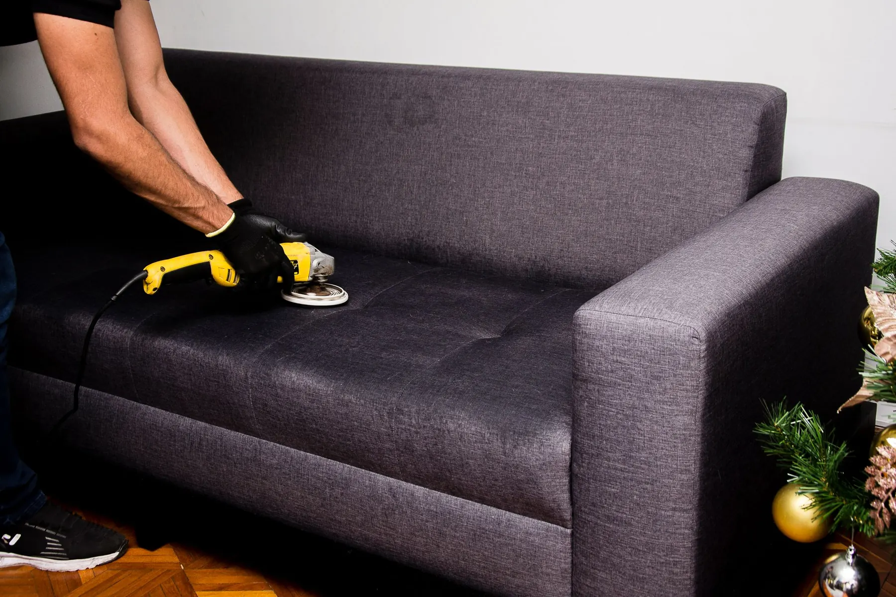

Higienização de Estofados em São José dos Campos e Jacareí
Higienização de sofás, colchões, poltronas e cadeiras, impermeabilização profissional e limpeza interna de veículos. Atendimento especializado em todo o Vale do Paraíba.
Serviços
Higienização para cada estofado em São José dos Campos e Jacareí
-
 01
Higienização de sofá
01
Higienização de sofá
-
 02
Higienização de colchão
02
Higienização de colchão
-
 03
Higienização de poltrona
03
Higienização de poltrona
-
 04
Higienização de cadeiras estofadas
04
Higienização de cadeiras estofadas
-
 05
Impermeabilização de estofados
05
Impermeabilização de estofados
-
 06
Higienização automotiva
06
Higienização automotiva
Imagens ilustrativas.
Veja alguns dos nossos trabalhos
Fotos reais de antes e depois de estofados higienizados pela nossa equipe.
-
 Sofá retrátil cinza
Higienização dos assentos e dos módulos retráteis.
Ver trabalho
Sofá retrátil cinza
Higienização dos assentos e dos módulos retráteis.
Ver trabalho
-
 Colchão com manchas amareladas
Higienização da face de uso do colchão.
Ver trabalho
Colchão com manchas amareladas
Higienização da face de uso do colchão.
Ver trabalho
-
 Poltrona vermelha
Higienização do assento, do encosto e dos braços.
Ver trabalho
Poltrona vermelha
Higienização do assento, do encosto e dos braços.
Ver trabalho
-
 Sofá de canto marrom
Higienização de sofá de canto com chaise, assentos e encostos.
Ver trabalho
Sofá de canto marrom
Higienização de sofá de canto com chaise, assentos e encostos.
Ver trabalho
-
 Cadeira de jantar clara
Higienização do assento e do encosto.
Ver trabalho
Cadeira de jantar clara
Higienização do assento e do encosto.
Ver trabalho
-
 Par de poltronas estampadas
Higienização de poltronas com tecido estampado.
Ver trabalho
Par de poltronas estampadas
Higienização de poltronas com tecido estampado.
Ver trabalho
Cuidado que começa antes da limpeza.
Cada estofado é avaliado individualmente: tecido, condições da peça e o que o tratamento pode (ou não) alcançar.

Imagem ilustrativaAvaliação individual
Analisamos as características e condições do estofado antes de definir o procedimento.
Transparência sobre manchas
Explicamos as possibilidades e limitações do tratamento, sem prometer resultados impossíveis.
Atendimento profissional
Trabalhamos com organização, cuidado e atenção às características de cada material.
Orçamento claro
O cliente recebe as informações sobre o serviço antes de confirmar o agendamento.
Como funciona o atendimento
- 1
Conte o que precisa
Monte seu atendimento pelo site ou envie fotos pelo WhatsApp, com os itens e o seu bairro.
- 2
Receba e agende
Enviamos o orçamento e as datas disponíveis, de segunda a sexta-feira.
- 3
Higienização no local
Avaliação do tecido, teste em área discreta, aspiração e limpeza no seu endereço.
- 4
Secagem orientada
Recomendações de ventilação e uso até o estofado secar por completo.
Monte seu atendimento em poucos passos.
Selecione os estofados que deseja higienizar, informe suas características e envie uma solicitação personalizada para nossa equipe.
Montar meu atendimentoÁreas atendidas
Nossa sede fica em Jacareí, vizinha de São José dos Campos. As duas cidades têm atendimento regular; as demais do Vale do Paraíba, mediante confirmação de disponibilidade.
Sob consulta: Caçapava, Taubaté, Santa Branca, Guararema, Igaratá, Paraibuna.
A higienização é feita no meu endereço?
Sim. Sofás, colchões, poltronas e cadeiras são higienizados no local onde estão, sem precisar transportar nada. Para veículos, o local é combinado no agendamento.
Quais cidades vocês atendem?
Atendemos São José dos Campos e Jacareí, onde fica a nossa sede. Outras cidades do Vale do Paraíba são atendidas mediante confirmação de disponibilidade.
Quanto custa a higienização de um sofá?
O valor depende do tamanho e do tipo do sofá, do tecido, do nível de sujeira e das manchas. Use o Monte seu atendimento para enviar as informações e receber o orçamento pelo WhatsApp.
Todas as manchas saem?
Não dá para garantir. Muitas manchas saem ou clareiam bastante; outras, como as muito antigas ou que alteraram a cor da fibra, podem apenas suavizar. Avaliamos e explicamos antes de começar.
Qual a diferença entre higienização e impermeabilização?
A higienização limpa o estofado em profundidade. A impermeabilização é uma proteção aplicada depois, sobre o tecido limpo, que retarda a absorção de líquidos e dá tempo para limpar respingos.
Qual é o horário de atendimento?
Atendemos de segunda a sexta-feira, das 9h às 18h. Feriados são atendidos mediante agendamento prévio e disponibilidade.
Seu estofado limpo, sem sair de casa.
Envie fotos e o seu bairro pelo WhatsApp. Respondemos com o orçamento e as datas disponíveis.